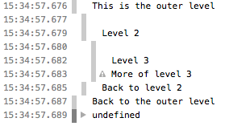

The console.group() method creates a new inline group in the Web
console log. This indents following console messages by an additional level,
until {{domxref("console.groupEnd()")}} is called.
{{AvailableInWorkers}}
console.group([label]);
labelconsole.groupEnd().{{h3_gecko_minversion("Using groups in the console", "9.0")}}
You can use nested groups to help organize your output by visually associating related
messages. To create a new nested block, call console.group(). The
console.groupCollapsed() method is similar, but the new block is
collapsed and requires clicking a disclosure button to read it.
Note: From Gecko 9 until Gecko 51, the groupCollapsed()
method was the same as group(). Collapsed groups are fully supported
starting in Gecko 52. See {{bug("1088360")}}.
To exit the current group, call console.groupEnd(). For example, given
this code:
console.log("This is the outer level");
console.group();
console.log("Level 2");
console.group();
console.log("Level 3");
console.warn("More of level 3");
console.groupEnd();
console.log("Back to level 2");
console.groupEnd();
console.log("Back to the outer level");
The output looks like this:

See Using groups in the console in the documentation of {{domxref("console")}} for more details.
{{Compat}}